Galerie
 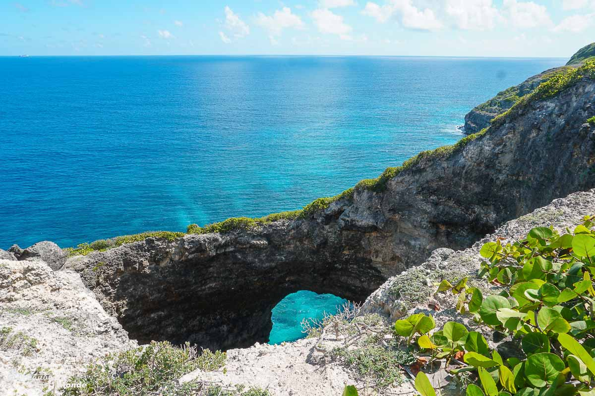
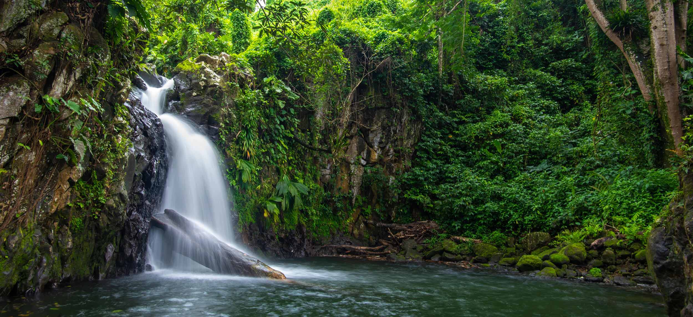
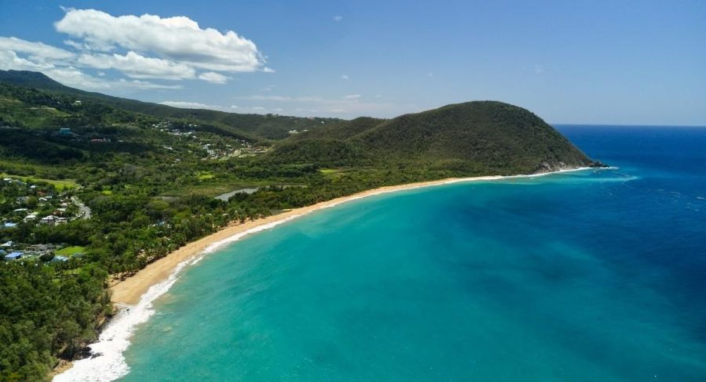
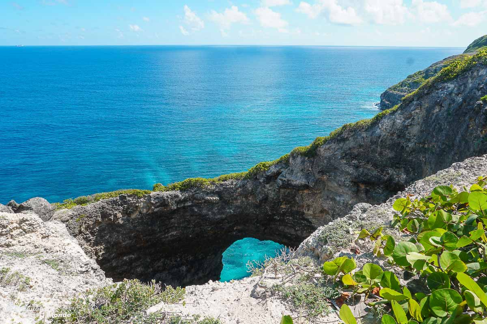
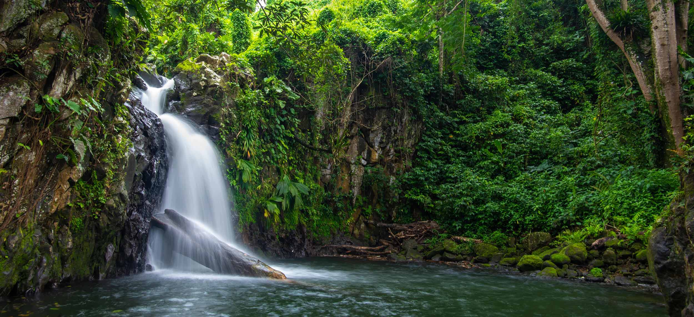
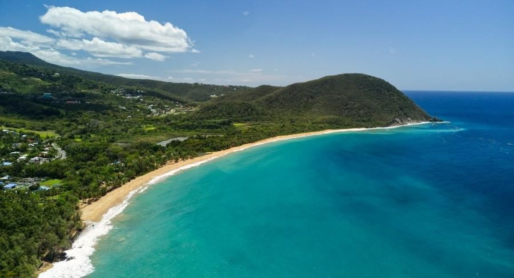
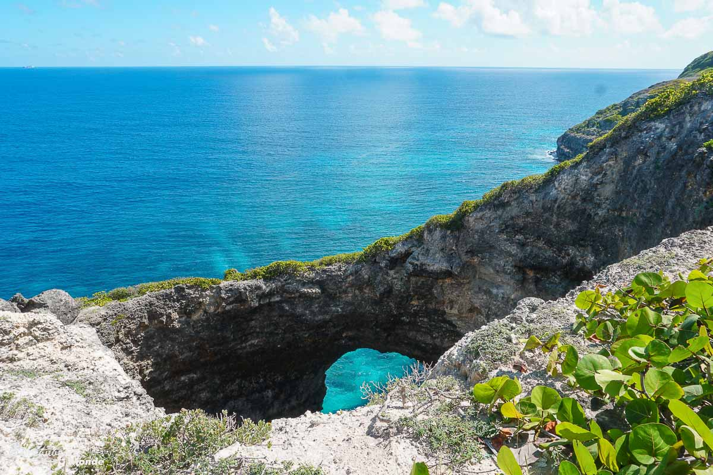
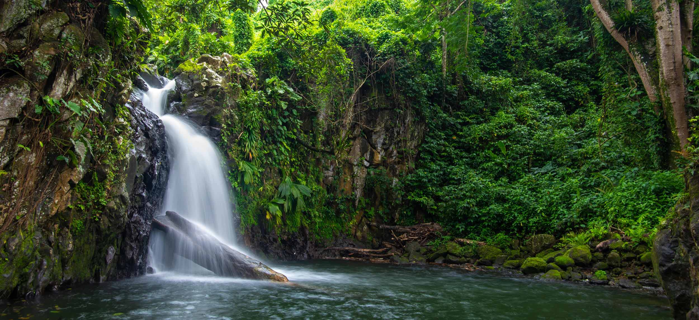
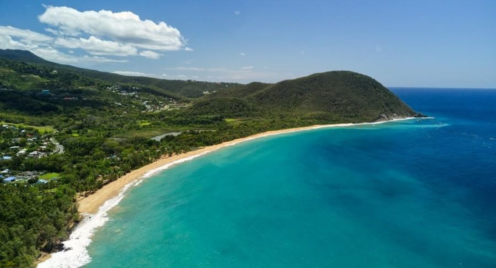
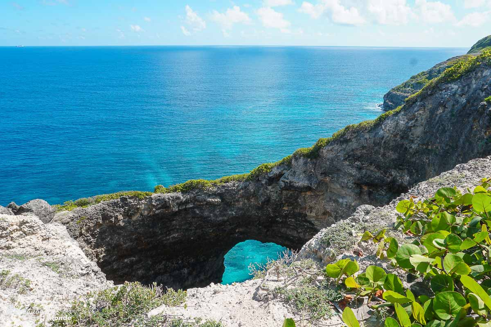
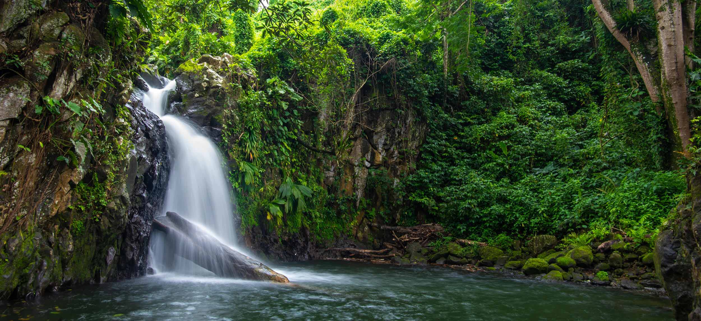
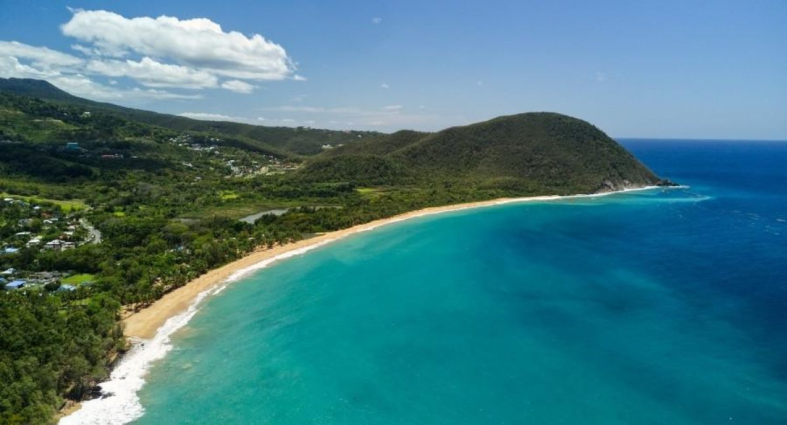

La rentrée scolaire est un moment important dans la vie de tous . Le président tient à marquer cette étape en soutenant notre jeunesse.
En savoir plusLa rentrée scolaire est un moment important dans la vie de tous . Le président tient à marquer cette étape en soutenant notre jeunesse.
En savoir plusLa rentrée scolaire est un moment important dans la vie de tous . Le président tient à marquer cette étape en soutenant notre jeunesse.
En savoir plus